Chapter 4 Build Final Scorecard Model
- Data Binning and WOE calculation
comb <- comb_hard # Select which data set you want to use from above techniques #
set.seed(12345)
train_id <- sample(seq_len(nrow(comb)), size = floor(0.7*nrow(comb)))
train <- comb[train_id, ]
test <- comb[-train_id, ]
## categorical variable -> level<10, or
col_unique<-lapply(lapply(train,unique),length)
catag_variable<-names(col_unique[col_unique<=10])
#2. type=character
chara_type<-lapply(train,typeof)
chara_names<-names(chara_type[chara_type=="character"])
catag_variable<-unique(c(chara_names,catag_variable))
catag_variable<-subset(catag_variable,!(catag_variable%in%c("good")))
#continuous variable (not categorical)
conti_variable<-names(train)
conti_variable<-subset(conti_variable,!(conti_variable%in%catag_variable))
# factorize both train and the test
train[,catag_variable]=lapply(train[,catag_variable],as.factor)
#str(train)
test[,catag_variable]=lapply(test[,catag_variable],as.factor)
#str(test)
# Binning continuous variable
result_con <- list()
for(i in 1:length(conti_variable)){
result_con[[conti_variable[i]]] <- smbinning(df = train, y = "good", x = conti_variable[i])
}smbinning.sumiv.plot(iv_summary)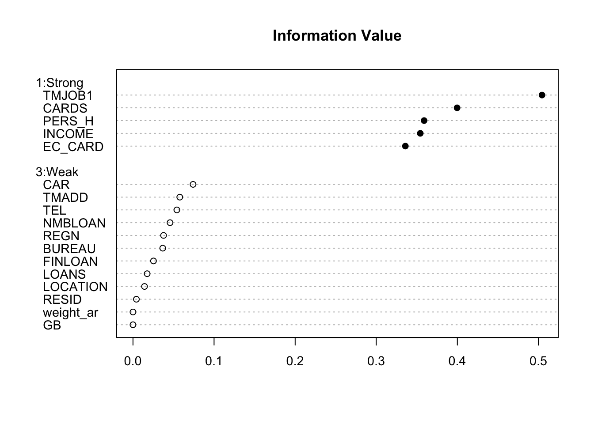
key_variable<-iv_summary$Char[iv_summary$IV>=0.1&is.na(iv_summary$IV)==FALSE]
results<-c(result_con)
result_all_sig<-results[key_variable]
for(i in c(1,4)) {
train <- smbinning.gen(df = train, ivout = result_all_sig[[i]], chrname = paste(result_all_sig[[i]]$x, "_bin", sep = ""))
}
for (j in c(1,4)) {
for (i in 1:nrow(train)) {
bin_name <- paste(result_all_sig[[j]]$x, "_bin", sep = "")
bin <- substr(train[[bin_name]][i], 2, 2)
woe_name <- paste(result_all_sig[[j]]$x, "_WOE", sep = "")
if(bin == 0) {
bin <- dim(result_all_sig[[j]]$ivtable)[1] - 1
train[[woe_name]][i] <- result_all_sig[[j]]$ivtable[bin, "WoE"]
} else {
train[[woe_name]][i] <- result_all_sig[[j]]$ivtable[bin, "WoE"]
}
}
}
#Below is useful for checking data cleaning process
#lapply(lapply(train[,key_variable[c(2,3,5)]],is.na),sum)
# calculate the WOE
train$good<-as.factor(train$good)
woemodel <- woe(good~., data = train, zeroadj=0.005, applyontrain = TRUE)## At least one empty cell (class x level) does exists. Zero adjustment applied!
## At least one empty cell (class x level) does exists. Zero adjustment applied!
## At least one empty cell (class x level) does exists. Zero adjustment applied!
## At least one empty cell (class x level) does exists. Zero adjustment applied!
## At least one empty cell (class x level) does exists. Zero adjustment applied!
## At least one empty cell (class x level) does exists. Zero adjustment applied!
## At least one empty cell (class x level) does exists. Zero adjustment applied!## apply woes
traindata <- predict(woemodel, train, replace = TRUE)## No woe model for variable(s): good#str(traindata)
train=cbind(train,traindata[,c("woe_CARDS","woe_PERS_H","woe_EC_CARD")])
############################## mapling table for the categorical woe ##############################
cate1=unique(train[,c("CARDS","woe_CARDS")])
cate2=unique(train[,c("PERS_H","woe_PERS_H")])
cate3=unique(train[,c("EC_CARD","woe_EC_CARD")])
####################################################################################################
train$weight_ar<-as.numeric(as.character(train$weight_ar))4.1 Build the logistic regression and variable selection
initial_score <- glm(data = train, GB ~
TMJOB1_WOE + INCOME_WOE+
woe_CARDS+woe_PERS_H+woe_EC_CARD
, weights =weight_ar,family = "binomial")
summary(initial_score)##
## Call:
## glm(formula = GB ~ TMJOB1_WOE + INCOME_WOE + woe_CARDS + woe_PERS_H +
## woe_EC_CARD, family = "binomial", data = train, weights = weight_ar)
##
## Deviance Residuals:
## Min 1Q Median 3Q Max
## -5.115 -1.151 1.997 2.662 4.427
##
## Coefficients:
## Estimate Std. Error z value Pr(>|z|)
## (Intercept) -3.19686 0.02395 -133.491 < 0.0000000000000002 ***
## TMJOB1_WOE -0.87136 0.03355 -25.970 < 0.0000000000000002 ***
## INCOME_WOE -0.20747 0.05761 -3.601 0.000317 ***
## woe_CARDS 1.04236 0.12078 8.630 < 0.0000000000000002 ***
## woe_PERS_H 0.79047 0.03708 21.318 < 0.0000000000000002 ***
## woe_EC_CARD -0.18214 0.13127 -1.388 0.165270
## ---
## Signif. codes: 0 '***' 0.001 '**' 0.01 '*' 0.05 '.' 0.1 ' ' 1
##
## (Dispersion parameter for binomial family taken to be 1)
##
## Null deviance: 19394 on 3149 degrees of freedom
## Residual deviance: 17138 on 3144 degrees of freedom
## AIC: 20286
##
## Number of Fisher Scoring iterations: 6- Variable Selected Logistic Regression
initial_score_red <- glm(data = train, GB ~
TMJOB1_WOE +
woe_CARDS+woe_PERS_H
, weights =weight_ar,family = "binomial")
summary(initial_score_red)##
## Call:
## glm(formula = GB ~ TMJOB1_WOE + woe_CARDS + woe_PERS_H, family = "binomial",
## data = train, weights = weight_ar)
##
## Deviance Residuals:
## Min 1Q Median 3Q Max
## -4.956 -1.162 1.992 2.663 4.365
##
## Coefficients:
## Estimate Std. Error z value Pr(>|z|)
## (Intercept) -3.19627 0.02391 -133.66 <0.0000000000000002 ***
## TMJOB1_WOE -0.89123 0.03301 -27.00 <0.0000000000000002 ***
## woe_CARDS 1.02451 0.04100 24.99 <0.0000000000000002 ***
## woe_PERS_H 0.80044 0.03724 21.50 <0.0000000000000002 ***
## ---
## Signif. codes: 0 '***' 0.001 '**' 0.01 '*' 0.05 '.' 0.1 ' ' 1
##
## (Dispersion parameter for binomial family taken to be 1)
##
## Null deviance: 19394 on 3149 degrees of freedom
## Residual deviance: 17151 on 3146 degrees of freedom
## AIC: 20293
##
## Number of Fisher Scoring iterations: 64.2 Evaluate the Initial Model
- Training Data
- KS - > best cut off 0.04327352
- ROC
train$pred=predict(initial_score_red,data=train,type = "response")
#train[is.na(train$weight_ar),]
train$GB<-as.numeric(as.character(train$GB))
train$good<-as.numeric(as.character(train$good))
smbinning.metrics(dataset = train, prediction = "pred", actualclass = "GB", report = 1)##
## Overall Performance Metrics
## --------------------------------------------------
## KS : 0.4908 (Good)
## AUC : 0.7948 (Fair)
##
## Classification Matrix
## --------------------------------------------------
## Cutoff (>=) : 0.0433 (Optimal)
## True Positives (TP) : 1345
## False Positives (FP) : 380
## False Negatives (FN) : 415
## True Negatives (TN) : 1010
## Total Positives (P) : 1760
## Total Negatives (N) : 1390
##
## Business/Performance Metrics
## --------------------------------------------------
## %Records>=Cutoff : 0.5476
## Good Rate : 0.7797 (Vs 0.5587 Overall)
## Bad Rate : 0.2203 (Vs 0.4413 Overall)
## Accuracy (ACC) : 0.7476
## Sensitivity (TPR) : 0.7642
## False Neg. Rate (FNR) : 0.2358
## False Pos. Rate (FPR) : 0.2734
## Specificity (TNR) : 0.7266
## Precision (PPV) : 0.7797
## False Discovery Rate : 0.2203
## False Omision Rate : 0.2912
## Inv. Precision (NPV) : 0.7088
##
## Note: 0 rows deleted due to missing data.smbinning.metrics(dataset = train[train$pred<=0.4,], prediction = "pred", actualclass = "GB", report = 0, plot = "ks")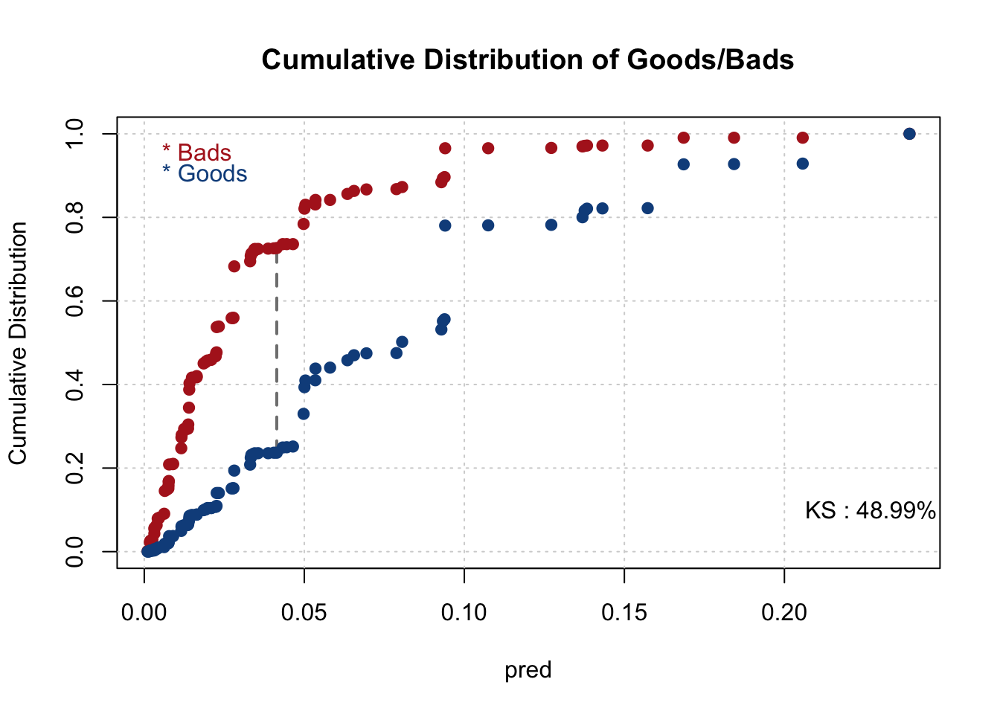
smbinning.metrics(dataset = train, prediction = "pred", actualclass = "GB", report = 0, plot = "auc")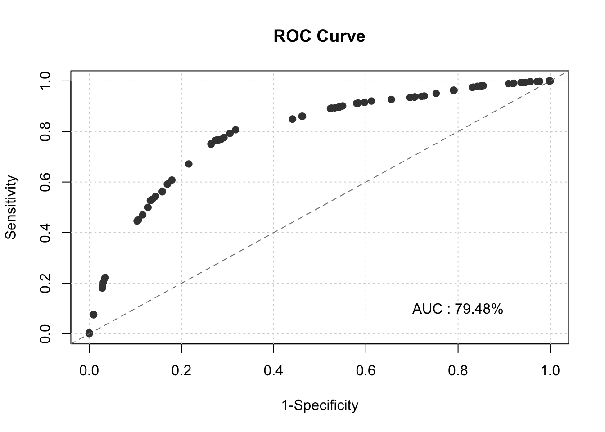
pred<-prediction(fitted(initial_score_red),factor(train$GB))
perf<-performance(pred,measure="tpr",x.measure="fpr")
plot(perf,lwd=3,colorsize=TRUE,colorkey=TRUE,colorsize.palette=rev(gray.colors(256)))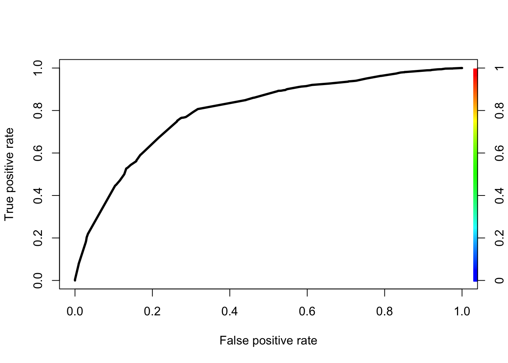
KS<-max(perf@y.values[[1]]-perf@x.values[[1]])
cutoffAtKS<-unlist(perf@alpha.values)[which.max(perf@y.values[[1]]-perf@x.values[[1]])]
print(c(KS,cutoffAtKS))## [1] 0.49082325 0.04327352- Testing Data
test <- comb[-train_id, ]
test[,catag_variable]=lapply(test[,catag_variable],as.factor)
str(test)## 'data.frame': 1350 obs. of 21 variables:
## $ PERS_H : Factor w/ 9 levels "1","10","2","3",..: 3 3 1 3 3 3 3 3 3 1 ...
## $ TMADD : int 3 60 72 168 192 240 264 288 360 999 ...
## $ TMJOB1 : int 999 999 999 999 999 999 999 999 999 999 ...
## $ TEL : Factor w/ 3 levels "0","1","2": 3 3 3 3 2 2 3 3 3 3 ...
## $ NMBLOAN : Factor w/ 3 levels "0","1","2": 1 3 3 1 1 1 3 1 1 3 ...
## $ FINLOAN : Factor w/ 2 levels "0","1": 1 1 1 1 1 1 2 1 2 2 ...
## $ INCOME : int 1000 2900 2300 0 0 2100 0 0 3000 0 ...
## $ EC_CARD : Factor w/ 2 levels "0","1": 2 1 1 1 2 1 2 2 1 2 ...
## $ BUREAU : Factor w/ 3 levels "1","2","3": 1 1 1 1 3 1 1 1 3 1 ...
## $ LOCATION : Factor w/ 2 levels "0","1": 2 2 2 2 2 2 2 2 2 2 ...
## $ LOANS : Factor w/ 11 levels "0","1","10","2",..: 4 2 2 2 1 2 2 2 1 2 ...
## $ REGN : Factor w/ 9 levels "0","2","3","4",..: 2 2 1 1 1 1 2 1 3 1 ...
## $ CASH : int 1300 900 1100 1900 1100 8000 1400 800 7000 3000 ...
## $ PRODUCT : Factor w/ 9 levels "","Cars","Dept. Store or Mail",..: 5 5 8 3 5 2 8 3 5 5 ...
## $ RESID : Factor w/ 3 levels "","Lease","Owner": 2 3 2 2 2 2 2 2 3 2 ...
## $ PROF : Factor w/ 14 levels "","Chemical Industr",..: 8 8 8 8 3 8 3 8 8 8 ...
## $ CAR : Factor w/ 4 levels "Car","Car and Motor bi",..: 1 1 4 1 1 1 1 1 1 4 ...
## $ CARDS : Factor w/ 6 levels "Cheque card",..: 1 3 3 2 1 3 1 1 3 1 ...
## $ GB : Factor w/ 2 levels "0","1": 1 1 1 1 1 1 1 1 1 1 ...
## $ good : num 1 1 1 1 1 1 1 1 1 1 ...
## $ weight_ar: Factor w/ 4 levels "1","1.5","29.9597523219814",..: 4 4 4 4 4 4 4 4 4 4 ...for(i in 1:1) {
test <- smbinning.gen(df = test, ivout = result_all_sig[[i]], chrname = paste(result_all_sig[[i]]$x, "_bin", sep = ""))
}
for (j in 1:1) {
for (i in 1:nrow(test)) {
bin_name <- paste(result_all_sig[[j]]$x, "_bin", sep = "")
bin <- substr(test[[bin_name]][i], 2, 2)
woe_name <- paste(result_all_sig[[j]]$x, "_WOE", sep = "")
if(bin == 0) {
bin <- dim(result_all_sig[[j]]$ivtable)[1] - 1
test[[woe_name]][i] <- result_all_sig[[j]]$ivtable[bin, "WoE"]
} else {
test[[woe_name]][i] <- result_all_sig[[j]]$ivtable[bin, "WoE"]
}
}
}
test$good<-as.factor(test$good)
########## categorical ####################################
test<-merge(test,cate1,by="CARDS",all.x = TRUE)
test<-merge(test,cate2,by="PERS_H",all.x = TRUE)
########## categorical ####################################
test$good=as.numeric(as.character(test$good))
test$GB=as.numeric(as.character(test$GB))
test$pred <- predict(initial_score_red, newdata=test, type='response')
smbinning.metrics(dataset = test, prediction = "pred", actualclass = "GB", report = 1)##
## Overall Performance Metrics
## --------------------------------------------------
## KS : 0.4880 (Good)
## AUC : 0.7752 (Fair)
##
## Classification Matrix
## --------------------------------------------------
## Cutoff (>=) : 0.0333 (Optimal)
## True Positives (TP) : 608
## False Positives (FP) : 181
## False Negatives (FN) : 155
## True Negatives (TN) : 405
## Total Positives (P) : 763
## Total Negatives (N) : 586
##
## Business/Performance Metrics
## --------------------------------------------------
## %Records>=Cutoff : 0.5849
## Good Rate : 0.7706 (Vs 0.5656 Overall)
## Bad Rate : 0.2294 (Vs 0.4344 Overall)
## Accuracy (ACC) : 0.7509
## Sensitivity (TPR) : 0.7969
## False Neg. Rate (FNR) : 0.2031
## False Pos. Rate (FPR) : 0.3089
## Specificity (TNR) : 0.6911
## Precision (PPV) : 0.7706
## False Discovery Rate : 0.2294
## False Omision Rate : 0.2768
## Inv. Precision (NPV) : 0.7232
##
## Note: 1 rows deleted due to missing data.smbinning.metrics(dataset = test[test$pred<=0.4,], prediction = "pred", actualclass = "GB", report = 1, plot = "ks")##
## Overall Performance Metrics
## --------------------------------------------------
## KS : 0.4901 (Good)
## AUC : 0.7770 (Fair)
##
## Classification Matrix
## --------------------------------------------------
## Cutoff (>=) : 0.0333 (Optimal)
## True Positives (TP) : 607
## False Positives (FP) : 179
## False Negatives (FN) : 155
## True Negatives (TN) : 405
## Total Positives (P) : 762
## Total Negatives (N) : 584
##
## Business/Performance Metrics
## --------------------------------------------------
## %Records>=Cutoff : 0.5840
## Good Rate : 0.7723 (Vs 0.5661 Overall)
## Bad Rate : 0.2277 (Vs 0.4339 Overall)
## Accuracy (ACC) : 0.7519
## Sensitivity (TPR) : 0.7966
## False Neg. Rate (FNR) : 0.2034
## False Pos. Rate (FPR) : 0.3065
## Specificity (TNR) : 0.6935
## Precision (PPV) : 0.7723
## False Discovery Rate : 0.2277
## False Omision Rate : 0.2768
## Inv. Precision (NPV) : 0.7232
##
## Note: 1 rows deleted due to missing data.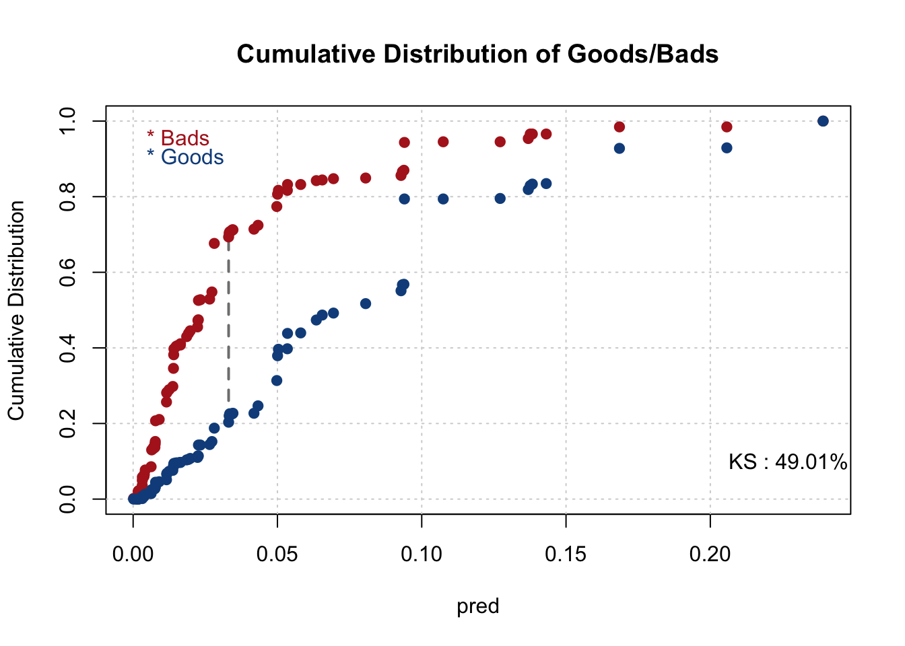
smbinning.metrics(dataset = test, prediction = "pred", actualclass = "GB", report = 0, plot = "auc")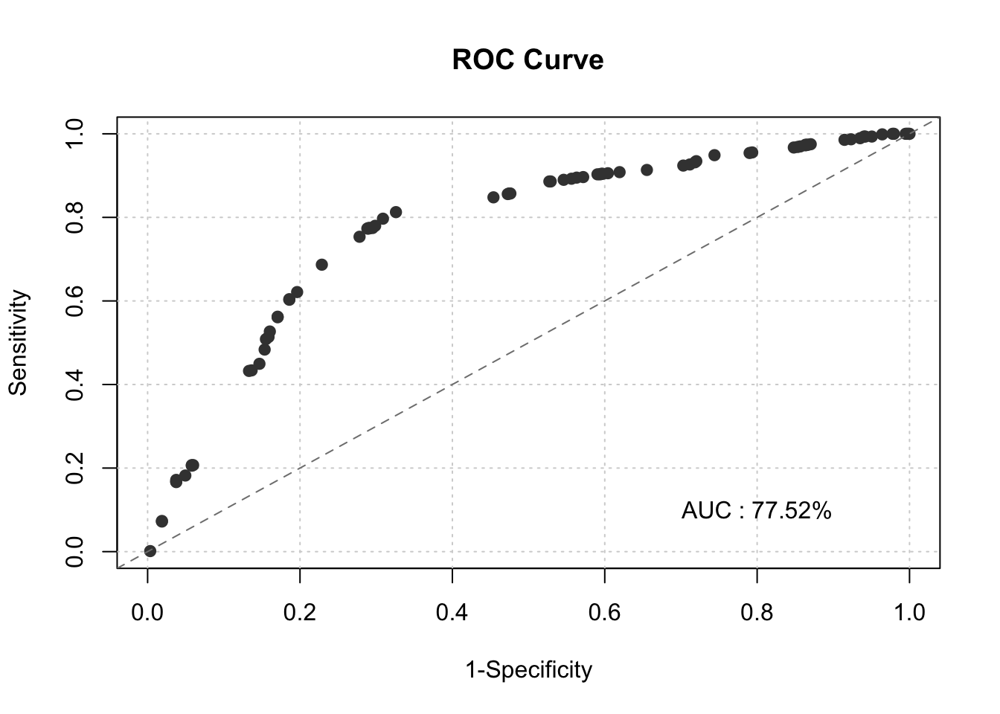
4.3 Final Scorecard
final_score<-initial_score_red
pdo <- 20
score <- 500
odds <- 50
fact <- pdo/log(2)
os <- score - fact*log(odds)
var_names <- names(final_score$coefficients[-1])
for(i in var_names) {
beta <- final_score$coefficients[i]
beta0 <- final_score$coefficients["(Intercept)"]
nvar <- length(var_names)
WOE_var <- train[[i]]
points_name <- paste(str_sub(i, end = -4), "points", sep="")
train[[points_name]] <- -(WOE_var*(beta) + (beta0/nvar))*fact + os/nvar
}
colini <- (ncol(train)-nvar + 1)
colend <- ncol(train)
train$Score <- rowSums(train[, colini:colend])
hist(train$Score, xlim=range(400,600), breaks = 30, main = "Distribution of Scores", xlab = "Score")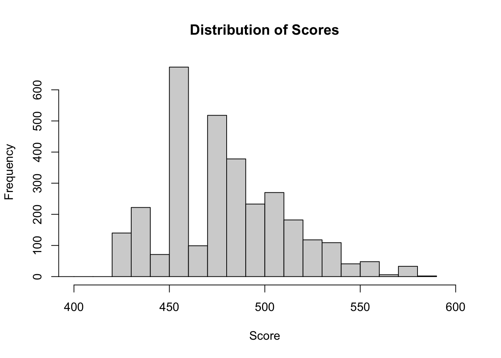
for(i in var_names) {
beta <- final_score$coefficients[i]
beta0 <- final_score$coefficients["(Intercept)"]
nvar <- length(var_names)
WOE_var <- test[[i]]
points_name <- paste(str_sub(i, end = -4), "points", sep="")
test[[points_name]] <- -(WOE_var*(beta) + (beta0/nvar))*fact + os/nvar
}
colini <- (ncol(test)-nvar + 1)
colend <- ncol(test)
test$Score <- rowSums(test[, colini:colend])
hist(test$Score, xlim=range(400,600), breaks = 30, main = "Distribution of Test Scores", xlab = "Score")accepts_scored_comb <- rbind(train[,names(test)], test)
hist(accepts_scored_comb$Score,xlim=range(400,600), breaks = 30, main = "Distribution of Scores", xlab = "Score")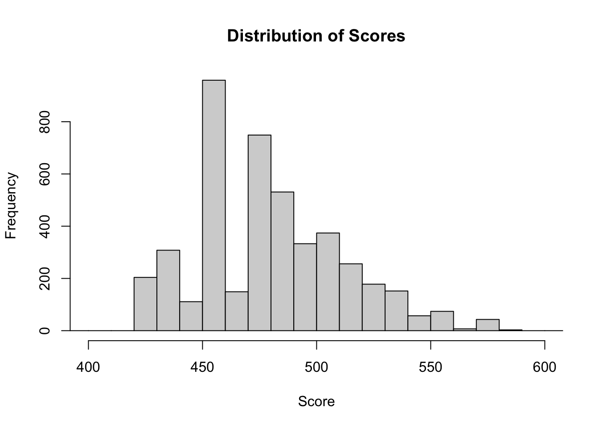
################# Score Card ###################
PERS_H_Score=unique(train[,c("PERS_H","woe_PERpoints")])
names(PERS_H_Score)=c("PERS_H","Point")
CARDS_Score=unique(train[,c("CARDS","woe_CApoints")])
names(CARDS_Score)=c("CARDS","Point")
TMJOB1_Score=unique(train[,c("TMJOB1_bin","TMJOB1_points")])
names(TMJOB1_Score)=c("TMJOB1","Point")
################# Score Card ###################
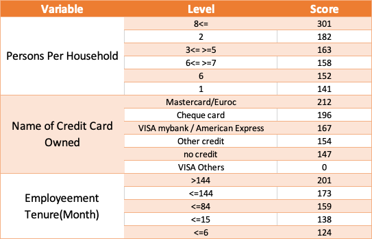
Scorecard
4.4 Score distribution
cutpoints <- unique(quantile(accepts_scored_comb$Score, probs = seq(0,1,0.1),na.rm=TRUE))
accepts_scored_comb$Score.QBin <- cut(accepts_scored_comb$Score, breaks=cutpoints, include.lowest=TRUE)
Default.QBin.pop <- round(table(accepts_scored_comb$Score.QBin, accepts_scored_comb$GB)[,2]/(table(accepts_scored_comb$Score.QBin, accepts_scored_comb$GB)[,2] + table(accepts_scored_comb$Score.QBin, accepts_scored_comb$GB)[,1]*weight_ag)*100,2)
#print(Default.QBin.pop)
barplot(Default.QBin.pop,
main = "Default Decile Plot",
xlab = "Deciles of Scorecard",
ylab = "Default Rate (%)", ylim = c(0,20),
col = saturation(heat.colors, scalefac(0.8))(10))
abline(h = 3.23, lwd = 2, lty = "dashed")
text(9, 4.3, "Current = 3.23%")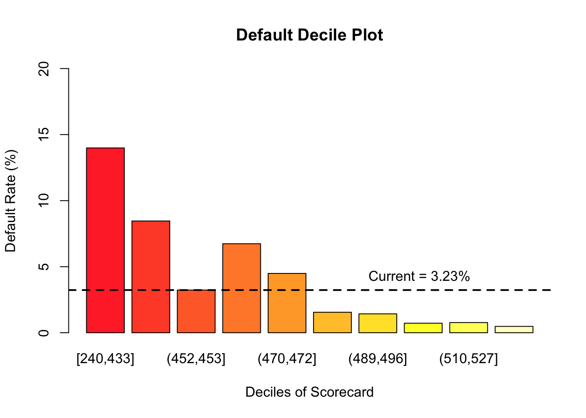
4.5 Plotting Default, Acceptance, & Profit By Score
def <- NULL
acc <- NULL
prof <- NULL
score <- NULL
cost <- 52000
profit <- 2000
for(i in min(floor(train$Score)):max(floor(train$Score))){
score[i - min(floor(train$Score)) + 1] <- i
def[i - min(floor(train$Score)) + 1] <- 100*sum(train$GB[which(train$Score >= i)])/(length(train$GB[which(train$Score >= i & train$GB == 1)]) + weight_ag*length(train$GB[which(train$Score >= i & train$GB == 0)]))
acc[i - min(floor(train$Score)) + 1] <- 100*(length(train$GB[which(train$Score >= i & train$GB == 1)]) + weight_ag*length(train$GB[which(train$Score >= i & train$GB == 0)]))/(length(train$GB[which(train$GB == 1)]) + weight_ag*length(train$GB[which(train$GB == 0)]))
prof[i - min(floor(train$Score)) + 1] <- length(train$GB[which(train$Score >= i & train$GB == 1)])*(-cost) + weight_ag*length(train$GB[which(train$Score >= i & train$GB == 0)])*profit
}
plot_data <- data.frame(def, acc, prof, score)
def_plot <- xyplot(def ~ score, plot_data,
type = "l" , lwd=2, col="red",
ylab = "Default Rate (%)",
xlab = "Score",
xlim=c(400:600),
main = "Default Rate by Acceptance Across Score",
panel = function(x, y,...) {
panel.xyplot(x, y, ...)
panel.abline(h = 3.23, col = "red")
})
acc_plot <- xyplot(acc ~ score, plot_data,
type = "l", lwd=2, col="blue",
ylab = "Acceptance Rate (%)",
xlim=c(400:600),
panel = function(x, y,...) {
panel.xyplot(x, y, ...)
panel.abline(h = 75, col = "blue")
})
prof_plot <- xyplot(prof/1000 ~ score, plot_data,
type = "l" , lwd=2, col="green",
ylab = "Profit (Thousands $)",
xlab = "Score",
xlim=c(400:600),
main = "Profit by Acceptance Across Score"
)
doubleYScale(def_plot, acc_plot, add.ylab2 = TRUE, use.style=FALSE)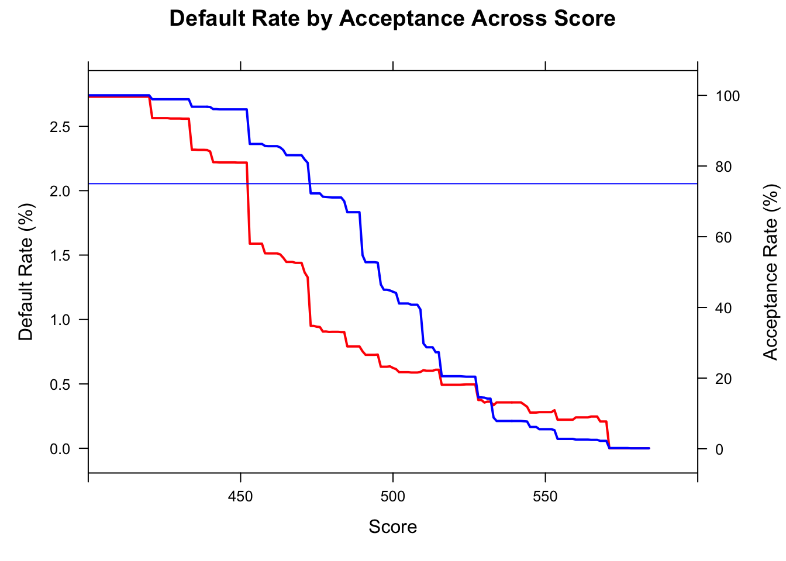
doubleYScale(prof_plot, acc_plot, add.ylab2 = TRUE, use.style=FALSE)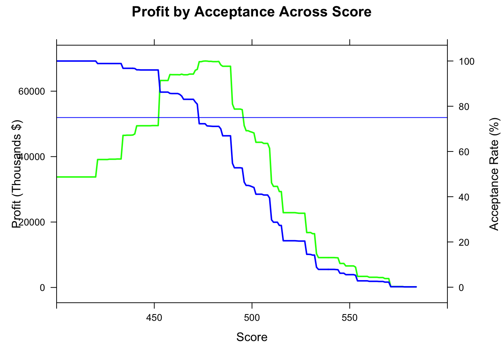
as.data.frame(lapply(plot_data[abs(plot_data$acc-75)<=4,],mean))## def acc prof score
## 1 0.9197601 71.56439 69093825 478as.data.frame(plot_data[plot_data$score==472,])## def acc prof score
## 233 1.327788 80.91123 66672232 472as.data.frame(lapply(plot_data[abs(plot_data$def-3.32)<=0.03,],mean))## def acc prof score
## 1 NaN NaN NaN NaNas.data.frame(plot_data[plot_data$score==441,])## def acc prof score
## 202 2.221145 96.10569 49415842 441